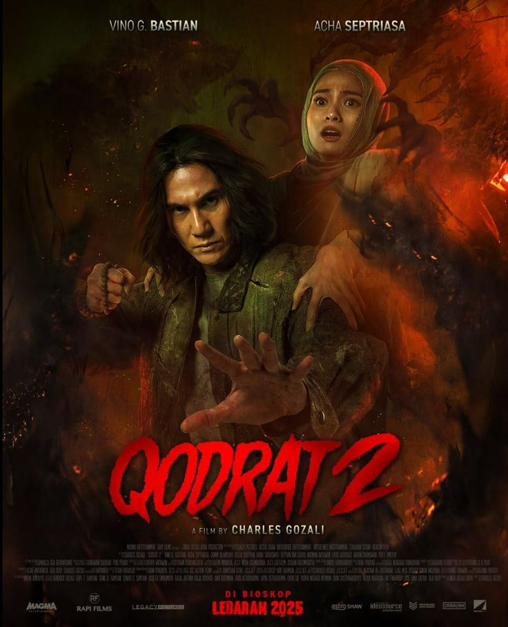

Qodrat 2
Qodrat 2 adalah film horor religius adikorati laga Indonesia tahun 2025 yang disutradarai oleh Charles Gozali. Film ini merupakan sekuel dari film Qodrat tahun 2022, yang masih mengangkat kisah Ustaz Qodrat yang diperankan oleh Vino G. Bastian yang kali ini berusaha mencari istrinya, Azizah, setelah mengalami depresi dan bekerja di sebuah pabrik yang menyimpan misteri gelap. Film produksi Magma Entertainment serta Rapi Films ini juga dibintangi oleh Acha Septriasa, dan Della Dartyan. Qodrat 2 tayang perdana di bioskop pada tanggal 31 Maret 2025.
Sinopsis:
Setelah pertempuran sengit melawan Assu’ala di film pertama, Ustadz Qodrat (Vino G. Bastian) melanjutkan perjalanannya mencari istrinya, Azizah (Acha Septriasa), yang mengalami depresi setelah menyerahkan dirinya pada kekuatan jahat demi menyelamatkan putra mereka, Alif. Azizah yang sempat dirawat di rumah sakit jiwa akhirnya keluar dan bekerja di sebuah pabrik pemintalan. Namun, pabrik tersebut menyimpan rahasia kelam. Teror mulai terjadi, satu per satu pekerja hilang secara misterius. Tersebar gosip bahwa pemilik pabrik melakukan ritual iblis dan bahwa para pekerjanya terikat kontrak darah. Bahkan, pernah terjadi kesurupan massal di dalamnya. Ustadz Qodrat harus kembali menghadapi kekuatan gelap yang lebih kuat dari sebelumnya, membawanya pada pertarungan iman dan fisik yang jauh lebih berat.[